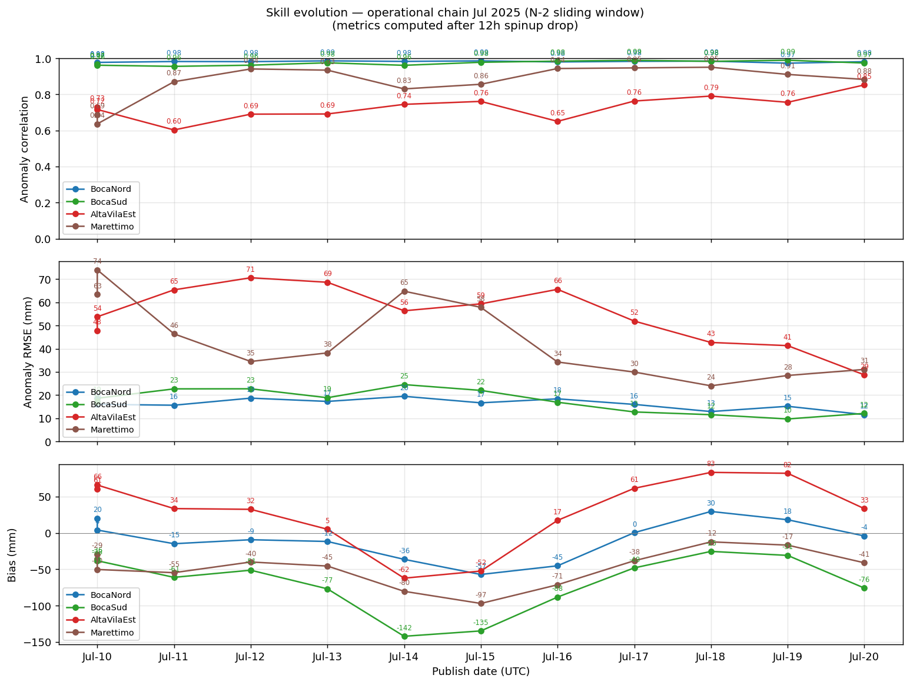
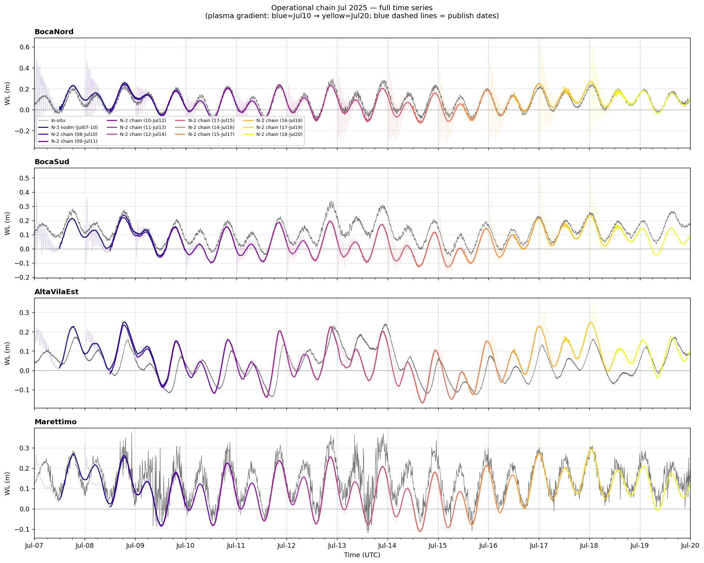

Hydrodynamic Model — Jul 2025 Operational Chain
Stagnone di Marsala · D-Flow FM 3D + SWAN coupled (v04AE) ·
12-run N-2 rolling continuation · Jul 7–20, 2025
Spatial Fields · Full Domain (run d2025-07-20_n2, Jul 18–20 UTC)
Water Level (m)
mesh2d_s1 · RdYlBu_r · 12 fps · colorscale = 2nd–98th percentile
Significant Wave Height (m)
mesh2d_hwav · plasma · SWAN coupled output
Surface Salinity (ppt)
mesh2d_sa1 top sigma layer · RdYlGn_r
Spatial Fields · Stagnone Lagoon Zoom
(lon 12.427–12.489, lat 37.790–37.916)
Water Level (m)
Significant Wave Height (m)
Surface Salinity (ppt)
Skill Evolution · Chain Jul 07–20 (12 runs × 4 stations)
Anomaly correlation, RMSE_anom, and bias vs publish date

Anomaly = de-tided WL (25h rolling mean subtracted). Metrics computed post-12h spinup.
Stations: BocaNord (blue) · BocaSud (green) · AltaVilaEst (red) · Marettimo (brown).
Time Series · Full Chain Jul 07–20
Model (plasma gradient: blue=Jul10 → yellow=Jul20) vs in-situ (black, 10-min)

Dashed vertical lines = daily publish dates. Faded bands = 12h spinup window.
Marettimo extracted from map.nc (cell idx=3276, bl=−303 m, via JRC TAD 658 target coord).
Per-Run Metrics · Water Level Anomaly Correlation and Bias
| Run | Period | BocaNord | BocaSud | AltaVilaEst | Marettimo | ||||
|---|---|---|---|---|---|---|---|---|---|
| corr | bias mm | corr | bias mm | corr | bias mm | corr | bias mm | ||
| d2025-07-10 | Jul 07–10 · N-3 baseline | 0.972 | +20 | 0.967 | −36 | 0.731 | +61 | 0.689 | −29 |
| d2025-07-10_n2 | Jul 08–10 · N-2 | 0.978 | +4 | 0.962 | −38 | 0.717 | +66 | 0.637 | −50 |
| d2025-07-11_n2 | Jul 09–11 · N-2 | 0.983 | −15 | 0.956 | −61 | 0.603 | +34 | 0.871 | −55 |
| d2025-07-12_n2 | Jul 10–12 · N-2 | 0.982 | −9 | 0.962 | −51 | 0.691 | +32 | 0.941 | −40 |
| d2025-07-13_n2 | Jul 11–13 · N-2 | 0.986 | −12 | 0.976 | −77 | 0.692 | +5 | 0.935 | −45 |
| d2025-07-14_n2 | Jul 12–14 · N-2 | 0.983 | −36 | 0.962 | −142 | 0.745 | −62 | 0.831 | −80 |
| d2025-07-15_n2 | Jul 13–15 · N-2 | 0.986 | −57 | 0.978 | −135 | 0.761 | −52 | 0.856 | −97 |
| d2025-07-16_n2 | Jul 14–16 · N-2 | 0.980 | −45 | 0.985 | −88 | 0.651 | +17 | 0.944 | −71 |
| d2025-07-17_n2 | Jul 15–17 · N-2 | 0.984 | 0 | 0.989 | −48 | 0.763 | +61 | 0.947 | −38 |
| d2025-07-18_n2 | Jul 16–18 · N-2 | 0.985 | +30 | 0.984 | −25 | 0.791 | +83 | 0.951 | −12 |
| d2025-07-19_n2 | Jul 17–19 · N-2 | 0.973 | +18 | 0.990 | −31 | 0.756 | +82 | 0.911 | −17 |
| d2025-07-20_n2 | Jul 18–20 · N-2 (latest) | 0.982 | −4 | 0.974 | −76 | 0.853 | +33 | 0.883 | −41 |
corr = anomaly correlation (de-tided, 25h rolling mean subtracted) ·
■ green corr > 0.95 / |bias| < 20 mm ·
■ orange corr 0.70–0.95 / |bias| 20–60 mm ·
■ red corr < 0.70 / |bias| > 60 mm ·
Marettimo extracted from map.nc (cell idx=3276, bl=−303 m).